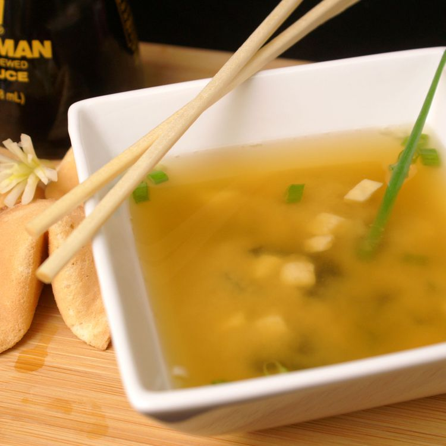

Miso Soup

This miso soup is full of savory flavors.
Add more dashi to your soup if you want a stronger stock. You can use yellow, white, or red miso paste for this soup — yellow miso is sweet and creamy, red miso is stronger and saltier.
- 4 Cups Water
- 2 Teaspoons Dashi Granules
- 3 Tablespoons Miso Paste
- 1 Package Tofu, sliced
- 2 Green Onions, sliced diagonally into 1/2 inch pieces
- Combine water and dashi granules in a medium sacuepan over medium-high heat, bring to a boil.
- Reduce heat to medium and whisk in miso paste
- Stir in tofu
- Separate the layers of gren onions and add them to the soup
- Simmer gently for 2 to 3 minutes before serving.